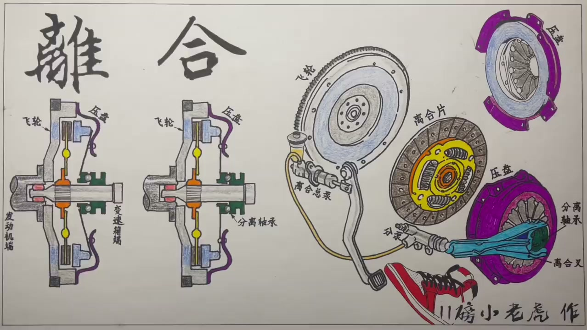
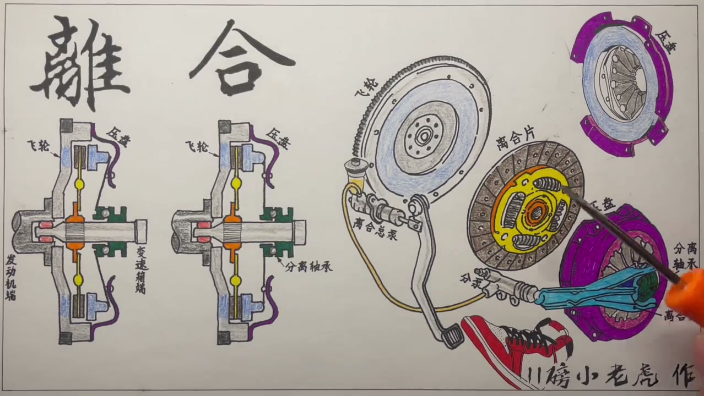
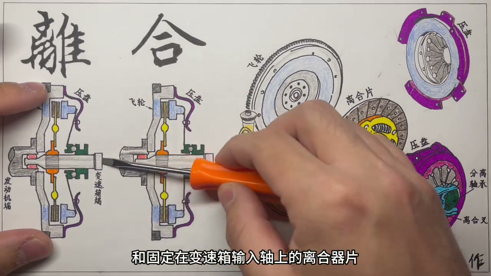
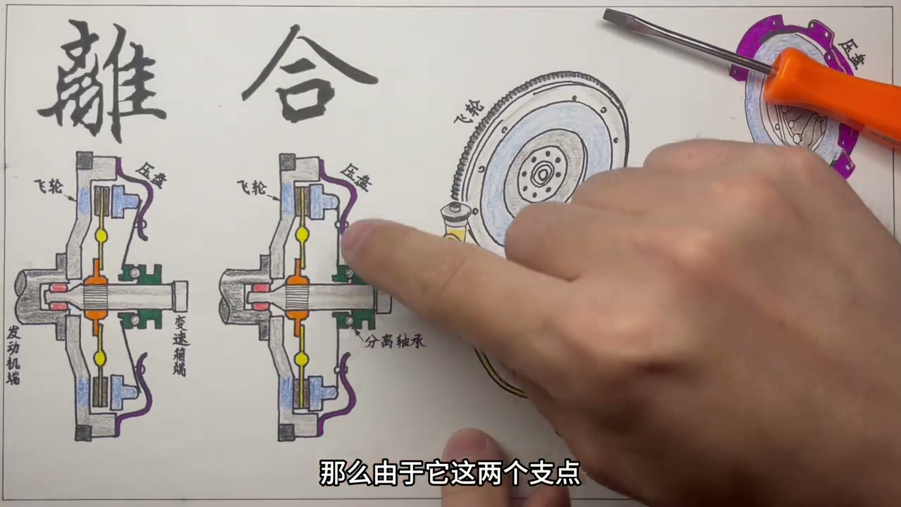
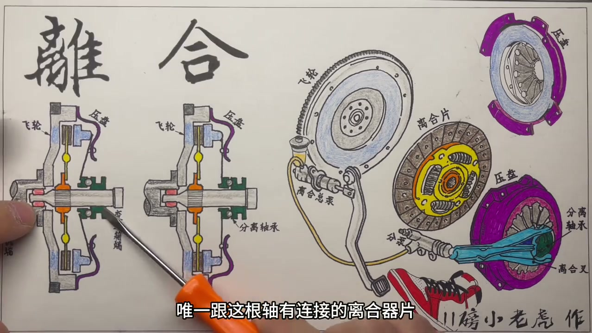
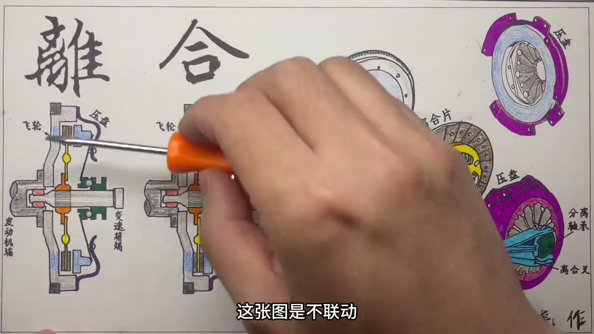

01
中文
离指的就是把发动机和变速箱分离，合指的是把它们结合。
EN
Disengaging separates the engine from the gearbox; engaging joins them.
表达提示disengage（分离）

Scene English · 汽车 · 离合器
How the Clutch Works, Plus Faults
🎧 语音讲解
What Clutch Means
情境离是把发动机和变速箱分离，合是把它们结合；就像山地车换挡时要松开脚上的劲。
离指的就是把发动机和变速箱分离，合指的是把它们结合。
Disengaging separates the engine from the gearbox; engaging joins them.
表达提示disengage（分离）
不懂的朋友可以理解为：骑山地车换挡时，脚上需要松一下劲。
Think of a bike: to shift gears you ease off the pedals for a moment.
表达提示ease off（松劲）
不松劲一边发力一边换挡，就会听到链条和齿轮磨损的声音。
Shifting under full power grinds the chain and gears.
表达提示grind（磨损）
disengage（分离
ease off（松劲

Three Key Parts
情境飞轮固定在发动机端，离合器片固定在变速箱输入轴，压盘把离合器片压向飞轮实现结合。
灰色的是飞轮，黄褐色的是离合器片，紫色的是压盘。
Gray is the flywheel, tan the clutch disc, purple the pressure plate.
表达提示flywheel（飞轮）
离合器片外圈有一圈特殊的摩擦材料。
The disc carries a ring of special friction material.
表达提示friction material（摩擦材料）
把离合器片用力压到飞轮上，发动机和变速箱就合上了；一松手就又分离。
Press the disc against the flywheel and power joins; release and it parts.
表达提示press together（压合）
flywheel（飞轮
friction material（摩擦材料

Pressure Plate and Diaphragm Spring
情境压盘通过膜片弹簧实现翘起和压回：压下膜片弹簧中心，压盘蓝色部分向后翘起分离；松手就顶回压紧。
压盘和飞轮通过外面一圈螺丝固定在一起。
The pressure plate bolts to the flywheel around its rim.
表达提示bolt together（螺丝固定）
压盘中间像爪子一样的东西是膜片弹簧。
The claw-like center is the diaphragm spring.
表达提示diaphragm spring（膜片弹簧）
压下膜片弹簧，压盘的蓝色部分就向后翘起，离合器分离。
Depress the spring and the plate's face tilts back—the clutch disengages.
表达提示tilt back（向后翘起）
松手后，蓝色部分被顶回去，压盘把离合器片紧紧压在飞轮上。
Release and the face returns, clamping the disc to the flywheel.
表达提示clamp（压紧）
bolt together（螺丝固定
diaphragm spring（膜片弹簧

From Pedal to Release Bearing
情境踩下离合踏板，液压系统顶动分离叉和分离轴承，推动膜片弹簧实现分离；松脚则恢复结合。
现实中压膜片弹簧的不是手，而是绿色的分离轴承。
In practice, the green release bearing, not a hand, presses the spring.
表达提示release bearing（分离轴承）
你离合踏板踩下去，液压系统往前顶，把分离叉向前推。
Press the pedal and hydraulics push the release fork forward.
表达提示release fork（分离叉）
分离状态就是手动变速箱换挡的时机。
The disengaged state is the moment to shift gears.
表达提示time to shift（换挡时机）
release bearing（分离轴承
release fork（分离叉

Half Engagement
情境起步时必须半联动，先压一半力把变速箱侧速度带起来再完全咬合，否则会有闯动。
半联动就是压盘压上去了，但又没有全压上去。
Half engagement means the plate is partly engaged.
表达提示half engagement（半联动）
从静止到一挡起步，第一次离合片咬合就要有半联动。
Pulling away in first gear demands a moment of half engagement.
表达提示pull away（起步）
先压一半力把变速箱侧速度带起来，再完全咬合，不然车辆会突然闯动。
Ease the load in first so the car doesn't jerk.
表达提示avoid jerking（避免闯动）
上坡停车靠半联动而不是手刹，会过度磨损离合器片。
Holding a hill with the clutch instead of the handbrake wears it out.
表达提示wears it out（磨损）
half engagement（半联动
pull away（起步

Whining When Depressed
情境离合踩到底有嗡嗡异响、松开就消失，问题在支撑变速箱输入轴前端的定位轴承。
离合一踩到底就听到嗡嗡嗡的异响，松开又没有了。
A whine appears when the pedal is fully down and vanishes on release.
表达提示whine（嗡嗡异响）
问题出在支撑变速箱输入轴前端的定位轴承。
The culprit is the pilot bearing that supports the input shaft's front end.
表达提示pilot bearing（定位轴承）
不踩离合时，飞轮和输入轴同步转动，轴承内外圈没有相对运动。
With the clutch engaged, flywheel and shaft spin together, so the bearing is quiet.
表达提示spin together（同步转动）
踩下离合后两者转速不同，轴承内外圈有了相对运动，异响就出现了。
Depressed, their speeds differ and the bearing's races rub—hence the noise.
表达提示relative motion（相对运动）
whine（嗡嗡异响
pilot bearing（定位轴承
说离合含义
说三大件
说膜片弹簧
说半联动
说踩离合异响
坡道别用离合驻车。
起步要半联动。
换挡先松劲。
嗡嗡响查定位轴承。
正确使用延长寿命。